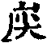
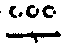

竺峰敏禪師語錄卷之四
詩偈
贈劉郡侯
步劉郡侯韻
贈別劉鎮臺
祝楊郡侯
次朱檀越韻
題走馬燈
鼓燈
橘燈
贈雲空禪宿
贈劉鎮臺
祝黃守府
壽汪護法
祝武郡侯
示樂菴居士
示唯慶居士
示覺菴上座
示鑑空禪人
示張道人
次荅胡公韻
示允應禪人
募修曲水菴
復學正陶公
示覺蔭居士
示慈蔭居士
示賢蔭居士
示福蔭居士
示恒覺居士
示曇蔭居士
步慶忠老人山居五首
霧煙滿地似銀盤極目遙看不見村野徑曲岐藏宇宙荒畦連斷合乾坤月明未許經常榻日暖無妨過別門養就白牛全水草入廛豈類出溟鯤
採得黃蔬當野芹頻炊猶勝合歡欣掃塵豈為來霜月趺座唯期布法雲不是閉門徒學解恐經出戶惹閒文恩酬匪但還三[祝/土]席捲胸開莫厭紛
嚼碎虛空一物無就中那更有精粗雲移朗月磨新鏡雪占青山壓老喁梅放花開香已播鶴鳴子和詠無孤擬將個事頻拈出只恐時人畫作圖
重陽九九與冬連補衲添衣樂自然雪點紅爐焰說法瓶煎白滾水談禪心猿[跳-兆+孛]跳龜毛縛意馬馳奔兔角拴但把纖塵循念釋免教聲色逐流傳
高懸赤幟俟屠兒怎奈紅塵路轉岐絲釣徐舒探錦鯉繁柯脫落露霜梨繩床鐵脊隳三體跌膝金剛豎兩眉聖智大心雖志遠等閒猶自隔籓籬
次韻荅寶善居士
味道餐松豈復暈還期疏淡映恒星燒豬煮酒憑君美種蔬培瓜任我精獨坐虛窗傷翠鳥偕行嶺畔感鸝鶯堪嗟歲月增如許肯飽甘肥醉萬春
建新城有感
從來丕極泰旋生歷歲烽煙似野塵萬里江山含雜燧一天風月隱艱辛微危再誦包桑易得德還歌樂土人幾度頻觀松雪操依稀節候顯忠臣
中秋無月
金風颯颯漸連低已是清光正滿時斜翫碧空雲漫砌細看蟾色影微移銀缸擬設光堪待冰鑑雖懸朗映遲為愛良宵無遣適因茲故憶庭芳詩
喜晴
霧消雲散海山寬策杖頻瞻興自歡倦鳥翩翩鳴脫褲遊人冉冉笑彈冠芒鞋緊捎隨登陟楖栗橫擔任往還為惜世波常汩沒曾將晴雨幾回看
午日苦雨
頻滋霖雨弗時休出入難教涉遠遊簷滴潺潺畦鼓亂鳥音寂寂鶯梭收陽光鑑翬浮雲護蒲水柸傾野濬流好把陰霾一掃盡翛然行樂絕追求
除夕
追隨函丈入廛居出沒蹉跎已夕除節慶不同風月子升遷一任去來輿烹泉共話年丁永把賦頻敲歲正餘鐘罷更殘人影亂參參雲水自成渠
午夜即事
喜參爐韝鍛諸方雁落魚沉列兩行律數閒推將巽短輪光重照映庚長滿聲不是龍舟鼓異味無干虎艾香更羨林泉非市井唯期點雪貴當陽
元宵
日旋薄暮崦嵫斜鑼鼓驚敲送晚霞轉覺冰壺升島嶼忽看星斗煥龍蛇光生火樹連宵晝色借金鵝晃露華燈燦月明人不夜謾將消息與吾家
步胡部院被執二首
幻海勞勞轉覺深何如破夢隱山林搬柴運水元常事喫飯穿衣雜用心語後投機爐點雪言前薦得眼飄金世間若限英靈者誰把浮華易翠岑
無數情懷說向誰唯存短句賦輕辭須知驟雨無終夕怎奈浮生有了時解帶留衣聞早矣挂冠選佛覺遲而白雲幾度聚還散一顆紅輪任所之
寄同參
一自五雲握別時群鴻南北影參差忽聞花雨欣無罄弗共塤箎恨莫移梅放已隨殘雪萃松孤詎謂暖春遲重逢若折賓主句還羨相將鼎鼐之
步韻
霏霏細雨釋炎懸霧集雲興若尚賢暑熱弗知經幾幾溫寒何止較千千統觀萬彙同蒼犬始信流光若逝川漫把溪山頻嘯傲年年雅自看周旋
新秋有懷
秋晚陰凝計入山山中成現許多般枯枝旋拾炊蔬飯煨芋時熬當素食夾岸蘆花風剡白滿林楓葉露凝丹細將物理閒推測個是心空奈歲寒
閒來園畔檢文無瞥見般般景物殊馬齒侵蔬鋤鏟漏蔦蘿援樹斧斤蕪古道迷原趨鳥道性珠汩雜捨魚珠應憐場社競浮者曾究先賢意也乎
幾回林下憶吾曹若個盟偕管鮑交樹靜寒凝霜凜冽蘭凋臭隱菊芳嬌群鴻展轉依沙岸孤鶴翱翔舞碧霄珍重漁翁休撥棹等閒驚起易新巢
孰道吾儕肆志高其如節候不相饒折籬補壁工輪技覆雨番雲斗轉扚石鼓輕敲期唱和鳳凰鳴嘎待摩霄法門蟲豸誠如許信是疇能奪錦標
寓石鼓和馬文學韻二首
羊腸曲徑幾經穿為羨幽蘭隱谷泉秋氣恬然雲淡淡新晴皓杳月涓涓禪心豈況沾泥絮傑士寧同脫殼蟬好把緣思齊放下何人老去再童年
盤陀疊膝雅歡娛那問軒居過也無拭涕尚閒空懶瓚存情起見障文殊循環日月為燈火俛仰乾坤作屋廬撒手懸岩須薦取非仙非釋亦非儒
步涪陵陳先生韻(時天使惠藏佛如寸許)
微塵剎土皆是佛展握何分掌與拳機熟謾存常斷見相空寧滯有無邊若以色見真非見始信因圓果自圓於此別開青白眼靈峰囑記渾周全
四八端嚴非法身為憐族姓應于人傳來天使忻留帶轉示高明羨撥塵有意桃源殊昔果無心胥國洵前因從教妙相周沙界爭似渠儂一念真
贈余郡侯
福星光燦靄蒼窮瑞氣騰騰映蜀東遐邇民歌五褲樂高低麥秀兩岐穜神清宇水瑩如玉政肅岷山賦厥躬可是靈峰曾付囑從教緇素沐仁風
過白岩訪眾禪德
先哲曾經幾共遊吾儕雅自荷綢繆主賓意適牽詩興手足盟心振祖猷殿閣巍巍金像古園林鬱鬱素光浮感今憶昔儔堪述允矣同撐藏海舟
祝楊郡侯
重周花甲兆天間紫極凝禧沛澤長佛性依依滋翠柳民心樂樂蔭甘棠三千蟠實馨香永九轉靈丹應濟昌埜外何能興祝獻持將山海伴壺觴
和朱檀越韻二首
豎幟江頭展釣磯時聞鵑語喚人歸遙看隴樹春光麗俯閱園蔬翠帶肥日午風和開竹逕時清氣淑啟柴扉曾經破浪垂香餌為羨金鰲掣電飛
徜徉埜外洵優遊踏遍鄉關杜遠丘雨過曉山青欲滴煙凝晚岸淡如流詞林楚楚忻翹首頑石斑斑解點頭大道堂堂隨指顧謾將中閫作郊郵
步慶忠老人詠蓮六首
豎草拈花構沼臺為因族姓結蓮胎二三寧待文殊指六八親承法藏來火宅馨香真可羨汙泥馥郁潔堪栽為輪為座憑君薦一念繩真即便開
曾陪茂叔敞瞿塘無限清蔭滿院涼風鶴頻驚莖實泯史書唯載姓名長雲根固植非情愛浯水閒滋啟異香拔幟豎竿悲願切眉端弗吝白毫光
清池葉映鏡團雲水面風停意更欣露滴撲翻波底月魚遊壓落斗稍文花開好把無生薦浪破何由漏習聞冰湛淵沉逸興杳滿塘菡萏自芳芬
憑闌凝思白蓮香出息還將入息長顏色雪鮮難點綴藕絲空靜絕馳張無塵茂叔比君子有豔楊思況六朗兩諦共欣同別異一輪獨自露清光
炎天沒事漫周行掩蓋重重疊護陰風遞荷香根不偶日穿池影照無侵覺初倩爾開清思夢曉憑伊捧智心鏡破見空花爛熳寧容識浪起幽深
垂鉤尤憶火中蕖牛糞常將熱土芝悲願誓同不請友慈衷故示採蓮師東林社結分階品西蜀爐開有便宜若個攪翻無垢面倒跨鐵馬杜閒詞
初夏寓觀音菴苦雨感賦
登臨訪故慶檀波梅雨流漣沒澗柯一曝十寒生最少五更三點漏偏多陽舒須倩拏雲手霧釋維期鼓棹歌幾度憑欄觀瀑漲緣追斯匿睹恒河
和宣慰馬司君宜亭韻
河山帶礪樂亨嘉遞代恩榮仰麗華金谷觴添斑袖舞玉樓瑞藹彩雲遮桂蘭棠棣聯芳盛琴瑟塤箎唱和賒巧構營為深似海欞開八面任天涯
步學正盧公韻
公轡臨時喜暫攀清風拂拂滿林間芬芳桃李開窗面淡蕩溪光映斗山揮麈談玄攄聖慮論經化俗解民頑相將擬話無生句山水悠悠景色斕
重遊方廣有懷
巍峨祖脈倚天山層疊峰巒涌鐵船野逕曲岐迷古道荒煙幕覆隱宗傳重輪佛日真身顯再沐皇風覺果圓更冀寂光時照拂心花開燦闡優曇
秋日過觀音寺訪嵩璞耆德
新秋火鏡尚高懸興適還期訪舊賢妙湛身心三十二陀羅手臂萬百千山橫玉案來東嶺水遶吟龍出右川喜雨不須頻作賦相將一笑卻歸旋
辭院出關感賦三首
二十餘年住此中棘林變作梵王宮積銖累寸恢先緒茹蘗飲冰鑑古風蝸角蠅頭匪事志鳥居魚食信參同鴟鳶嚇鵷徒張喙螢燄難將爇海空
三載工夫未克周池魚無妄起魔鉤菩提種布終成果叉聚形開始就頭天地蘧廬憑任運山河關鍵洵遨遊可憐簷外飯生雀朝暮無餐空鬧啾
謾謂吾儕輕浪遊滔滔虐焰苦搜求缽囊檢點徒羞澀杖履追隨適去留一片痴心唯自解千斤重擔倩誰酬竿頭掉撥圖真化不釣金鱗誓不休
謝學正陶公元日惠念珠
晝夜輪來百八數數完理極任周旋性天月朗光明潔識海波恬珠媚鮮韓子留衣輝法苑蘇公解帶鎮林泉何如今日齊穿貫一顆圓時萬顆圓
臨江八景總題
鯨音大振覺群生桂魄光浮夜氣清頑石含瑛鑑照朗靈蟲貢寶物華明暮煙宛轉山拖練澗水委蛇地涌瓊卷幔天河頻倒瀉陽回淑景萬方榮
吊恒心禪德
守道精操數十秋培元梓幹衍宗猷滿期東建新蓮社詎意西歸預聖流君願既周功早熟予懷深慟愧遲留了知個裏無來去恒燦心化五葉優
瀘陵白塔
肩級玲瓏勢接天登臨一望邈山川遊人簇雜蟻旋磨奉像蕭疏石綻蓮二水遶環雙應現四方拱峙總殊妍到來未暇論賓主共座分居各晏然
詠梅兼柬圓森去文二座
雙株頻綻逗先春我過尋幽意可人噴鼻直須經九上還拳尤喜越三登冰肌傲雪偕微笑玉骨凌霜凝化神眾美群芳欣賞鑑成圓調鼎洵舒陳
題燈
微塵普現一燈中一燈悉具微塵義試觀一一燈光明究竟咸借油薪力我有靈明不借者歷歷明明莫可把顛拈倒弄任施呈豈是尋常之乎也
贈別童兄和尚
遽奮搏風翼摩天邈萬程出北誠佳賞圖南意更殷勁翮超群羽挺特傑時倫翛然難比況卓約詎可評壯志寧如此誰為競流行杳渺天地間一目盡煙塵湖海鉤竿別乾坤局調新高超千聖軌獨步祖庭闉佇聞花雨靄還期龍象騰杖錫今飛也塤箎異地鳴去去難為別蓬帆憶遠雲致懷聊以贈願啟少林春
贈別李鎮臺
憶昔武侯初澤隆于蜀地殷勤盡國忠憂恤樂民義輔弼壯千夫謀猷冠萬帥移星換斗機浴日補天智夷夏仰殊勳叟童懷去思博施念未灰遺蔭情何寄再見韋皋仁重逾淑度治呼禽布勝因感羽輝舍利爰古以驗今疇能芳厥緒弗憚運籌功唯守安常志公賦三生約我承兩諦備緇侶慶檀波黔黎樂廕庇德師自融融福源亦易易丁斯鼎革時潛御韜藏轡大樹應方榮細柳聿增翠偉哉過量人佛果永斯記
祝宣慰馬司君
紫氣騰函關庚星耀倚天八紘雲冉冉四面水漣漣桃熟降王母榴開醉李仙鹿車欣御伍鶴駕喜盤旋文物多師古詞鋒伴友賢玉堂光不夜金谷酒如泉鐵券分符永銅章浥露淵宜亭增晏樂閬苑益真詮味道瑤池上逃禪象帝先法源二諦共誼結三生緣趙老時攜晉寶公歲滿延依依何以頌願濟海山綿
新秋有懷
颯颯凄風至蕭然景物殊雲迷古道隱雨滴徑庭蕪法係憑他濫禪心雅自符報予林下客守志急其孤
中秋無月有感
寒蛩經噪砌隙晷影頻移人謂秋中節我傷法晚時桂輪懸帳幕冰鑑覆簾帷寧肖蟾宮步連空一掃之
步劉郡侯韻
兩諦何殊別唯空與未空慈雲周性海惠澤溥仁風報國心丹赤投機雪點紅世間出世法貞越詎能窮
寓石鼓和馬文學韻
石鼓聲傳久推敲意可人爐山空秀麗錦水益清新隱士昂藏志衲僧散淡身融通不二旨相共話無生
贈余三護法
錦水一澄清唯君惠澤深幹旋舒壯志經濟冠元勳漁牧關城閱琴堂座席焄相期話不二兩諦喜春昕
贈吳郡侯
梅燦喜芳妍馨香播九天陽春洵有腳愛旭映全川里巷歌聲遍關城瑞氣延林泉何以頌可是應金仙
祝嵩山居士
二載隱天臺埜心雅快哉採芝尋古道煨芋待英才寶掌乘雲集安期駕鶴來南星庚耀朗共赴海門開
示聞一上座
祖庭拭望久機叩應臨時青眼恒瞻盻赤肩每在期開胸隨縱奪捲席任成禠卓爾徹天躍垂鉤四海涯
示泰來上座
君為我而至為君我特回尋源探虎穴達岸鼓雲雷頭角興競出掌拳俱拓開摶風宜奮翮泰運自天來
贈睿珍上座
擔荷經年久參差謾躋攀乾坤朗若鑑今古鎮如山祖道勤珍惜宗綱莫放閒行行須穎脫宜闡上頭關
贈馬司君
應現主中主天然尊貴殊玉樓懸古鏡金冊篆新符二諦懷無間三生約有孚靈明原卓犖進步足良圖
祝武郡侯
庚耀燦浯水籌添澍島萊仁人躋壽域庶物樂春臺權應五驄瑞維期萬戶才林泉時祝頌指日仰三台
祝劉鎮臺
喜留籌添屋欣聞里巷歌天香雲結篆桂子月繁科一路威聲遠三秋露沛多舞松連紫氣惠澤孰能過
祝黃守府
節度重臨蜀涪陵紫氣陳松屏增列翠黔水益澄清上苑桂棠永瑤池桃藕榮萍心何以晉山海慶同春
壽汪三護法
九十春光遍關城景物嘉翠屏朝獻彩紫極晚飛霞日啖冰桃藕時餐玉李瓜埜情何以贈芹藻賽丹沙
贈馬護法(代作)
靈峰親記莂法社喜同源支許耽巖谷李楊振教門金章蔭祖德鐵券鎮宗藩兩諦欽擔荷依依介一言
贈俗兄
手足重逢日依依儒釋親兩間成皓首一氣度玄津慧遠邀蓮社淵明醉本真就中稱快處濟濟蔭瓊林
贈俗姪
至親喜再遘一日勝於年逸翮知元壯修鱗洵夙緣家傳維啟後世業已光前埜外儔堪贈吾宗慶躍然
贈學正鄒檀越
多年懷夙願君為我成圓藏海重輪永壽山鞏固延千秋經史聚億代桂蘭聯更冀三台耀常持佛日宣
登重龍山(上有龍池水來鶴亭)
覽勝重龍上登臨眼界超鶴來擬丁令杯渡換王喬企足捫星斗凝眸遠市朝惟池高且潔飲鑑滌煩囂
再步重龍兼柬羅學正
重龍稱勝趣泉壓眾山川源自定中發鶴從空裏旋憑欄低市井倚樹挹雲仙追昔古資治幸今仰二天
贈重龍住持
曩昔水觀出而今山厭看水山轉舊局日月運新丸具是堅貞操持斯方便竿濯纓濯足者慎毋自輕瞞
即事偶占
踏遍雲山趣大都洵夙緣君來胡應現我至即還編葦渡疑真教桴浮匪浪傳棲棲何所事界海任翛然
和學正熊公
憶昔賢芳躅遐心憩輞川優遊唯學道笑傲喜逃禪反第還皈佛投機法悟仙相將語不二謾自謂幽玄
其二
諦觀諸萬象山靜水忙忙老樹枝蒼翠新林葉淡黃松篩金粉膩池茁白蓮香若個能齊物來同共飲光
五言
重龍山晚眺
重龍晚眺望夕照挂枝斜坐樂觀魚藻行吟聽井蛙
其二
龍山高且潔池水甘而勻樹曲如虯伏石橫似虎蹲
臨江八景
翠屏春曉
翠出群峰外倚天勢莫休挺然擁岸立淑氣滿林丘
紫極晚煙
淡淡如鋪練橫拖紫極前詳觀其出處遠罩夕陽邊
治平晨鐘
鍧聲徹太虛震起斗杓磯驚醒群生夢行行得自揮
巴臺夜月
玉魄正懸空漁人鼓浪中棹穿一天碧釣起滿江紅
鳴玉浮沙
溪湧金沙聚人遊玉帶圍相逢不是路來往步如飛
西岩瀑布
誰將此素絨閃爍挂懸空織造多機巧絲毫不費工
石臺照鏡
頑石解含情溶溶若鑑瑩屋廬皆端映竹樹弗倒生
五龍托寶
江頭堆異磧宛轉若虯龍共捧團圞石回環洵水衝
平都山
仙去名猶在山空水益清我來纔展拜佇聽鹿長鳴
拈頌
聚雲師翁荅漢月禪師四問。
第一問正睡著時與死了燒了心之與性牙齒打不著須向這裏希取大用如何是此處大用。
荅云南泉貓兒趙州狗子。
頌捏不成團撥不開如如了了自徘徊旋元根境離回互彌勒徒勞顧善財。
第二問沿流不止絕卻真照照不到處如何是吹毛用了急須磨且道磨個甚磨。
荅云鐵稜角丁丁枴枴水鳥針飆飆瀟瀟。
頌線斷重聯鏡破圓前三後四了無關磨稜合縫阿誰鑑黑漆崑崙一串穿。
荅云朝拂南浦雲暮捲西山水。
頌獨露全彰空劫前霧銷雲淨月華鮮漁翁棹破三更夢野鶴枝啼半夜天。
第四問近世野狐都說心性禪不知姓張姓李請禪師代荅一轉語貴圖天下衲僧脫卻腥臭。
荅云麻姑擲米去丁令化鶴歸。
頌百家姓趙從頭錯彼錯此錯錯莫休錯錯頓令錯亦錯一天霜月晒骷髏。
舉聚雲師翁問漢月禪師四問。
荅云撲翻明鏡換烏珠粉碎虛空抽橫骨。
頌一二三四五六七七六五四三二一顛拈倒弄行摩訶摩訶般若波羅蜜。
荅云陳公睡重脅老眠輕。
頌一團和氣鼓春風八萬四千數莫窮只在尋常方寸裏熨斗煎茶銚不同。
荅云跌宕二儀摩娑六子。
頌日月籠中鳥乾坤馬上毛放去也轟雷掣電收來兮靜浪潛濤俯仰折旋無不是何如畢吏飲酕醄。
第四問老鼠吞大象蝦蟆口咬著吞不入拖不出蒼頭老兒跳一步請下一轉語。
荅云風吹石臼眼麻迷。
頌六根互用碗脫臼四大抽添眉結絛寄語時人休顧戀一聲款乃徹雲霄。
舉聚雲師翁令僧問破山禪師智不到處切忌道著道著即頭角生語未終山便啐僧云作麼生會山云會個甚麼僧作禮山與一踏僧云還有麼山擬取棒僧便出師聞之呵呵大笑。
頌卦爻未動早蒙屯況復披雲更露文爭似東風一吹綻千紅萬紫逐時昕。
舉劉墨仙居士持聖恩錄與聚雲坐間論及楊岐九峰之語雲問曰正恁麼時楊岐在前九峰在前士良久遂問和尚作麼生雲便喝士曰這一喝是前是後雲翹一足士便禮拜。
拈云唱喁和于乃後先之啟迪喝中棒下實賓主之機鋒個中還有不蹈此輒者麼也是徐六擔板。
頌問道何如見道真敲枷打鎖貴無心翹伸參禮髑髏露已覺回頭錯應人。
舉聚雲聽晚課畢問僧云僧是自己又皈個甚麼僧云和尚也須歸方丈雲曰用歸作麼僧趨前而立雲曰好個臨終西方境分明在目前僧云用臨終作麼雲曰我是死了不曾埋底僧云若活來西方則無矣雲曰如佛度一切。
拈云好個西方境無端添了許多狼藉且道如何與伊除卻數聲清磬是非外一個閒人天地間。
頌求人莫若求己倚門傍戶暫止家家路透長安未識長安程幾程幾幾方寸裏一元燦燦三輪濟濟。
舉聚雲問僧汝自金粟來如何是金粟得力句僧云白雲覆青山青山不露頂雲曰此是意識家語如何是得力句僧云虛空粉碎大地平沉雲曰此是義學家語如何是得力句僧云一拳打破時如何雲曰此是衲僧家語如何是得力句。
拈云路遙知馬力日久見人心雖然言端語的未免苦口叮嚀要識叮嚀處麼一番遇飯一番飽一度聞雷一度驚。
頌肩擔日月步風雲俯視乾坤灰線痕線斷焰銷絕朕跡從教鵑鳥叫深林。
舉聚雲閱五代史次僧問云既是死了不曾埋底又如何荅得話雲曰唐以劉瓚為秦王傳。
拈云儂家不管興亡事盡日和雲占洞庭。
頌剔透肯綮不留筋庖丁刃發若新硎停刀四顧儔能解煙水茫茫泡影明。
舉僧問聚雲世尊道天上天下唯吾獨尊為甚麼雲門要一棒打殺雲曰路見不平傍人鏟削進云既打殺為何將與狗子喫雲曰一報還一報。
拈云從教冤債自分明千古萬古阿喇喇。
頌見得分明用得親不平還有不平人個中娛樂無窮已那肯輕將持贈君。
舉僧問聚雲曹洞宗旨雲曰汝曾問過人麼僧云曾問瑞象來雲曰渠作麼生荅僧云他豎五指雲曰死漢還問甚麼人僧云問萬峰雲曰渠作麼荅僧云他打五棒雲曰死漢僧便問如何是君向臣雲打僧一扇如何是臣奉君雲將扇一旋如何是君雲豎起扇如何是臣雲橫按扇如何是君臣道合雲擲下扇僧便禮拜。
拈云東坡羹看破天下禪和子聚雲扇驗盡世上野狐禪若遇醉臥雨中並其一而亡之者來又作麼與伊打當。
頌機不離位墮毒海乘時打劫陷深坑奉向共功功弗共日午三更調轉新。
舉聚雲問書記云會寫不怕筆頭樁記云不打這鼓笛雲打云不打這鼓笛記云無手人又作麼生雲打云不打這鼓笛記云草裏漢雲復打云不打這鼓笛。
頌鞀鼓年年鬧不休何人善解汨江愁滿聲直透雲霄也免使華亭覆卻舟。
舉聚雲問僧喚作竹篦則觸不喚作竹篦則背首山念唱道大慧依樣畫葫蘆聚雲又作麼生僧云鐵稜角笑殺水烏龜雲便打。
拈云雖然不借陽和令自在東風暖上林。
頌顛拈倒弄慣施為唱道依摸總屬痴菱角烏龜開夜晏從教一擊亡所之。
舉聚雲因僧多慕朝海乃云海雖闊大都是川水流去底僧云未審川水在甚麼處流來雲喚侍者云盤中菜著些醋好。
頌萬派朝宗入海源酸鹹苦澀一般餐舌頭好教知溫暖唼著些兒心膽寒。
舉聚雲因侍者設桌太遠雲自撤近前者云君子離臺三尺雲曰小人聻者云挨桌磕膝雲曰衲僧分上者無語。
拈云中庸之為德全在體物而不可移侍者幸自不語若語未免反了中庸。
頌踢倒飯床捲卻席小人君子兩難立面皮翻轉衲僧機無言有語只這是是不是王老莊中喫油餈土地至今猶害噎。
舉聚雲示四字。

拈云頭戴剛叉帽身穿衲結衣。
頌魚遊江水月當空散步徜徉興趣濃木馬泥牛憑運轉銀河斗柄直朝東。
拈云看他家事忙且道承誰力。
頌幾度憑欄數白雲山頭石畔恰相應腳跟弗動閒觀聽鳥語溪聲演梵音。
拈云舌端湧素馬鼻息納金牛。
頌煙嵐為蓋月為燈鐵脊隳空萬境澄耳裏厭聞吳鼠鬧眼中詎視黔驢鳴。

拈云翻身那管布單破普天匝地一聲雷。
頌地作枕兮天作衾一齁鼾夢老乾坤黃梁熟矣華胥覺喚醒從前錯悟人。
舉聚雲師翁示眾云(沒量大人被語默裏轉)撥塵見佛(抖擻破▆瓦)佛亦是塵(光耀恒沙數)問了荅了(兒啼女哭)直下翻身(還須擊碎髑髏)請君再進一杯酒(爭似盧仝七碗茶)西出陽關無故人(腦後見腮莫與往來)。
拈云一等沒絃琴三換無孔笛。
頌淡淡煙籠樹影橫松濤竹詠雜溪聲誰知陌上黃鸝囀露出深閨幽隱情。
華嚴三觀頌
色空無礙雲飛天外飆飆颻颻霮霮[雨/對][雨/對]景靜物閒神融意醉沒頭沒腦大虛粉碎
理事無礙須彌投芥不寬不窄穩持穩載無正無偏不觸不背縱奪卷舒我觀自在
事事無礙蛇蟲蜂蠆活捉生擒貴買賤賣六道逍遙四生萃類不乞一文放下布袋
十二時歌
雞鳴丑驚起子胡那隻狗聲吠啀喍醒齁鼾角催嗚咽寒星斗慢思惟慵動口下榻更衣正抖擻究竟堅持獲法身妙音清梵勤操守
平旦寅曙光灼破廣寒城琉璃殿上逍遙過碧玉階前坦蕩行不羨貴不憂貧乾坤讓我一閒身耽名逐利輕浮子樂隱修真散淡僧
日出卯光輝萬象分妍好無絃曲調協妙音沒底籃兒盛至寶徇賢愚隨拙巧一齊附入靈雲老桃萼芳鮮醫眼沙梅核渾淪塞口棗
食時辰收摺巾單入眾行撞著飯頭橫鐵橛返聞奯老度金針末後句讓當仁從教同吐不同吞吸乾滄海母勞舌嚼碎虛空不動唇
禺中已搬柴運水原常事拾得一頭拋一頭解空四句非四句莫踟躕休擬議折旋俛仰無不是兩翼蜻蜓俱摘卻一枚鐵釘恰相似
日南午時御白牛親步伍掩耳偷鈴樓子歌奪精賣肥盤山脯唱者唱舞者舞脫落繁柯毋滯阻得得撲翻布袋錢斑斑倒跨豐干虎
日昳未明白轉身親異類縮尾伸頭假顛狂張牙露爪閒遊戲脫功勳卸尊貴若不拿三便道四雉雀沖霄羊角摶野狐陣鼓金毛隊
晡時申忙著蓑衣整釣綸樵子負薪擔霧重牧童橫笛隔煙輕小釋迦老華亭者回負命有金鱗短舠巨楫俱拋棄餌月鉤雲一並吞
日落酉分咐泥豬並癩狗朝去暮來勤把捉出作入息牢堅守叩妙玄問知有管他陰六與陽九擬于天際覓南辰已自袖中藏北斗
黃昏戌縷腰繩子常收束夜明簾外快抽身荊棘林中謾住足莫瞞頇勤照燭寧分稚壯與真俗薪傳一盞無盡燈焰覆三尊常住佛
人定亥玉魄懸空銀色界不須黑夜扮觀音寧向太陽粧自在原本有非借貸何必囊藏與被蓋蕉鹿既空心性恬華胥早覺夢魂快
半夜子於穆緝熙存敬止泥牛啣月臥深潭木馬嘶風棲澗底飲瓊漿餐玉醴個個無褌長者子自覺覺他三覺圓後天天復先天啟
讚
慶忠老人真
稽首禮師像像兮不可擬翹勤讚師真真兮妙難比讚禮俱莫及冤結何時已劈筈奪窩貫便神鋒就機打劫徵入骨髓惹得兒孫苦效顰向道眉毛生板齒那裏是毛生處聻裊裊香煙白鶴飛轟轟雷電金光紫喝一喝
慶忠老人半影
眉橫鼻直睛青廣顙豐頤月面捲軸丈室相親原來只是者漢唯其個裏丹衷匪輕可以稱讚繼起也狐涎勢若消霜整頹兮細軌洞然懸鑑噫贓私露出沒遮欄一任大小半滿在在處處隨宜應現
釋迦栴檀瑞像(有恒禪人請)
大哉能仁示茲瑞像不居王宮豈住天上剎塵遍滿匪虛匪誑一瞻一禮莫輕瞞是則有恒真供養
送子觀音
童子在膝紫竹參天撫摩顧注慈意宛然婆心急切悲願恒圓龍女近侍善財遙瞻意其有法說兮休從眼聽意其無相睹兮毋用耳觀如此方得大自在夫是之謂有靈有感有因有緣
祖峰和尚
認真即假以假為真真假不立讚頌何云何所云卻有憑憑君崛起祖室憑君丕顯門庭門庭祖室重恢拓從教依缽自繩繩
徐見宇善士
耄耋介壽兮瑞藹忠南玉筍斑濟兮永永厥傳塗染丹青兮猊像生嚴手執箑扇兮舒卷優閒蘭芳桂秀兮於斯見焉讚諭莫可紀及兮從教香煙綿邈萬億斯年
徐孺人
手輪一百數循環靡罄靡窮坤德卓爾厚載楂梨橘抽崇隆念念欣從樂土心心注想金容酌水獻花勤頂禮彌陀親記獲圓通
松下達磨
昔將隻履西歸今則雙屣仍見蘆葦變作葫蘆擔頭少卻經卷總是丹青妄塗摸致令吾祖巧應現輪珠疊膝信安排未識婆心那一片是何婆心聻咦松陰爭似嵩山堅壁面何如親覿面
觀音
童子渾濯狻猊威獰兩兩互相參禮巍巍疊坐慈尊這慈尊勿外尋在邇而求諸遠在己而求乎人其人其人水月珠珍原在海鉼[金*弁]釵釧詎逃金
面壁達磨(二)
三三挨過年頭一一不知月尾苦苦面壁何讎默默腰雪失理大家徒費痴肝腸他咱原是我的你你你都盧是個真師真弟子
脊骨剛似銕心膽逕如風九載熊山闃寂一花少室崇隆盡屬懸疣負贅徒自避影逃空還知後面底人麼才也養其才忠也養厥忠
渡江達磨(二)
犯人苗稼摘蘆枝撥浪穿沙涉水泥不是無端輕賣弄總為痴心未化而那裏是未化處忙攜隻履潛歸去又被宋雲識得伊識得也卻無詞嘴烏面黑到斯時
對梁皇云不識一葦航飄然去雖是浪靜波恬爭奈悶來多睡至今猶未醒醒鼾聲遍震天地且幸長年懵懂稍覺時勢須還神光那一臂
自讚
原名治平祖堂敕建振宗禪寺維其創造兼守不惜腦門著地一味素分安貧百般外緣不事弗拈三要三玄務徵末後一句非又不非是卻不是腳跟掉動解談禪鼻孔無聲演妙義噫(妙微上座請)
功無一點事有千錯株守振宗三十載餘偶遊江浙四八月個無端描寫陋形卻是照程列課謂是竺峰耶可諾則諾謂非竺峰耶將錯就錯錯不錯高豎兩道粗眉一任諸人說長短論醍醐談毒藥咦(渾玉上座請)
本無位次何用安排不偏不倚如去如來強將圖形畫影洵是火裏蓮開蓮開從教香九九燈籠露柱舞三臺久踞振宗寺遠往江浙回回還迥無有何定水邊林下暢予懷暢余懷雅快哉曇林瑞蔭香煙永麈尾飛揚慧炬輝(曇蔭居士請)
見初禪人
手持一百八循環合其數見見之時念不妄兀兀其問醒初步梓枝挺秀真俗芳花蕊芬榮枝葉裕云是像兮矚之不見其光言非像兮卻之端有本據是何據六字耑持聖德昭生生頂禮波羅蜜諦
竺峰敏禪師語錄卷之四終